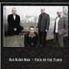

Celtic Lyrics Corner > Artists & Groups > Old Blind Dogs > Four On The Floor > Bedlam Boys
|  | Bedlam Boys |
| Credits : | Traditional; arranged by Old Blind Dogs |
|
a) Bedlam Boys
b) The Rights Of Man |
|
| Appears On : | New Tricks ; Live ; Four On The Floor |
| Language : | Scots-English |
Lyrics :
To see Mad Tom of Bedlam
Ten thousand miles I've traveled
Maudlin clothes on dirty toes
Just to save her shoes from gravel
Chorus (after each verse)
:
Oh will I sing, bonny boys, bonny mad boys
Bedlam boys are bonny
For they all go bare and they live in the air
And they want no drink nor money
I went to Pluto's kitchen
Just to break my fast one morning
It's there I got souls piping hot
That on the spit were turning
My staff has murdered giants
My pack the long knife carries
To cut mince pies from children's thighs
With which they feed the fairies
Spirits white as lightning
Did on my journey guide me
The sun did shake, the pale moon quake
Whene'er she did espy me
No gypsy, slut nor doxy
Can take my Mad Tom from me
I'll dance all night and with stars fight
The fray, it shall become me
To see Mad Tom of Bedlam
Ten thousand miles I've traveled
Mad Maudlin clothes on dirty toes
Just to save her shoes from gravel